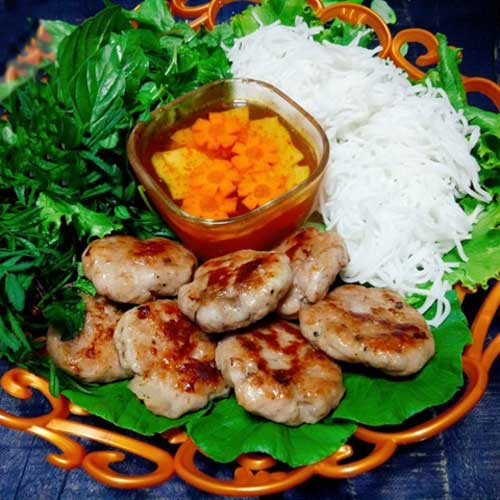

Bún Chả Hà Nội
Thoạt nhìn, bạn có thể nghĩ ngay đến món bún thịt nướng trong Nam, nhưng không nhé, hương vị nước chấm của bún chả Hà Nội hoàn toàn khác biệt. Một phần bún chả gồm: bún, nước chấm vị chua ngọt có kèm su hào và cà rốt ngâm giấm, thêm vài miếng chả thịt nướng thơm phức dậy mùi than lửa và hạt tiêu. Khi ăn, dùng kèm rau sống, mỗi thứ một chút hòa quyện cùng nhau tạo nên vị đậm đà, ngon khó cưỡng.
Xôi Khúc Hà Nội
Xôi khúc hay bánh khúc là một trong những món ăn tạo nên nét đẹp ẩm thực cổ truyền Hà Nội. Bánh có dạng khối tròn, bên trong nhân đậu xanh nhuyễn cùng thịt heo cắt nhỏ, cùng gia vị. Mua bánh khúc làm quà đặc sản Hà Nội sẽ rất tuyệt nó chứa đựng đầy đủ hương đồng cỏ nội, mùi vị lúa nếp quê hương.
Bánh Cốm Hà Nội

Bàn về đặc sản Hà Nội "được lòng" du khách, không thể nào không nhắc đến bánh cốm. Đây là món ăn vặt Hà Nội nổi tiếng bởi vị ngọt thanh và hương thơm đặc trưng hấp dẫn. Vỏ bánh được làm từ nếp cái hoa vàng màu xanh lá bắt mắt, ngọt và dẻo, ôm lấy phần nhân làm từ sầu riêng hoặc đậu xanh. Bánh cốm Hà Nội tuyệt hảo nhất khi dùng cùng trà nóng; là món ngon ngày Tết được nhiều người yêu thích.
Chả Rươi
Chả rươi là một trong những đặc sản Hà Nội nổi tiếng. Chả được làm từ rươi, thịt heo xay nhuyễn, trứng gà, hành, ớt ăn cùng nước mắm tinh tế đúng vị, khiến thực khách phải xuýt xoa khi thưởng thức. Miếng chả mềm béo, ấm nóng ăn trong tiết trời lạnh Hà Nội thì còn gì bằng?